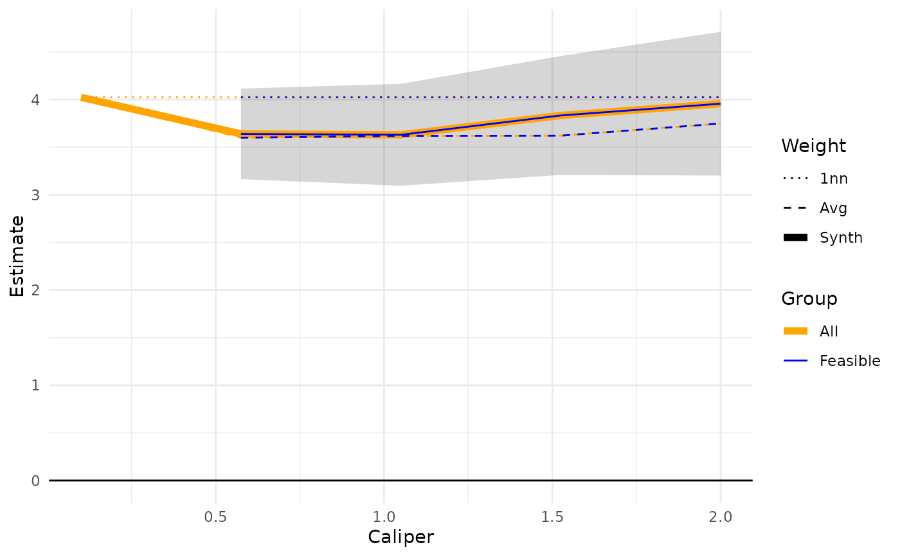
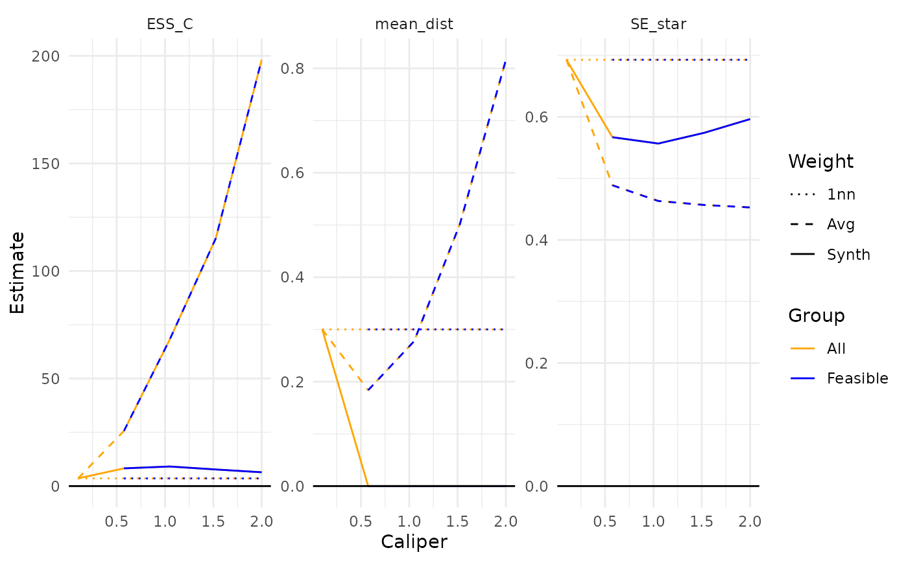

Make sensitivity table or plot of impact of changing caliper
caliper_sensitivity_table.RdTo generate the sensitivity table, method will run caliper from a min to max value, generating matches at each step. Then make a plot of the ATT and confidence interval for each point on the plot. Also can return table of results if 'return_table' is set to TRUE.
Usage
caliper_sensitivity_table(
csm,
data,
outcome = NULL,
include_distances = TRUE,
min_cal = 0.05,
max_cal = 5,
R = 30
)
caliper_sensitivity_plot(
csm,
data,
outcome = NULL,
include_distances = TRUE,
min_cal = 0.05,
max_cal = 5,
R = 30,
focus = NULL,
lines = c("FATT", "ATT", "FATT_1nn", "ATT_1nn", "FATT_raw", "ATT_raw")
)
caliper_sensitivity_plot_statistics(
csm,
data,
outcome = NULL,
min_cal = 0.05,
max_cal = 5,
R = 30,
vars = c("ESS_C", "mean_dist", "SE_star"),
focus = NULL,
lines = c("FATT", "ATT", "FATT_1nn", "ATT_1nn", "FATT_raw", "ATT_raw")
)Arguments
- csm
A CSM object OR a sensitivity ggplot created by, e.g.,
caliper_sensitivity_plot()orcaliper_sensitivity_plot_statistics()(or anything with the sensitivity table as an attribute) OR a table with the relevant columns (focus, lines, caliper, ESS_C, etc.). This allows calls to the different plot methods without recalculating everything.- data
The data the csm_matches object was fit to. (One could put in alternate data here, if the covariates aligned.)
- outcome
Name of the outcome column to use for ATT estimates. Required unless
csmalready carries a cached sensitivity table.- include_distances
If TRUE, include columns summarizing the distance between treated units and their matched/synthetic controls (mean/median distance, etc.) at each caliper.
- min_cal
Minimum caliper to try
- max_cal
Maximum caliper to try
- R
Number of calipers to try between min and max
- focus
What type of estimate to plot the confidence envelope for.
- lines
Which estimates to show as lines on the plot.
- vars
Which columns of the sensitivity table to plot as separate facets (default ESS_C, mean_dist, SE_star).
Value
A tibble of results.
A ggplot object, with the underlying sensitivity table
attached as the "table" attribute.
A ggplot object faceted by vars.
Details
Note: this is not sensitivity in the sense of a Rosenbaum sensitivity analysis of unmeasured confounding, but rather sensitivity akin to sensitivity under differing modeling specifications and tuning parameter selections (here, the caliper).
caliper_sensitivity_table() generates the sensitivity
table only.
caliper_sensitivity_plot() generates a ggplot with
y-axis as ATT estimate and confidence interval, and x-axis a series
of calipers from the minimum to maximum specified. Different lines
are shown for different ATT estimates.
caliper_sensitivity_plot_statistics() makes an augmented plot
from sensitivity plot showing ATT, SE and ESS
Examples
set.seed(4044440)
dat <- gen_one_toy(nt = 5)
mtch <- get_cal_matches(dat,
metric = "maximum",
scaling = c(1/0.2, 1/0.2),
caliper = 1,
rad_method = "adaptive",
est_method = "csm")
#> Warning: treatment variable not specified; defaulting to 'Z'
cal_sens_tbl <- caliper_sensitivity_table(mtch, dat, outcome = "Y",
R = 5, min_cal = 0.1, max_cal = 2)
cal_sens_tbl
#> # A tibble: 30 × 18
#> caliper Estimate ATT SE t N_T ESS_C N_C sigma_hat p_drop
#> <dbl> <chr> <dbl> <dbl> <dbl> <dbl> <dbl> <dbl> <dbl> <dbl>
#> 1 0.1 ATT 4.02 NaN NaN 5 3.57 4 NA 1
#> 2 0.1 ATT_1nn 4.02 NaN NaN 5 3.57 4 NA 1
#> 3 0.1 ATT_raw 4.02 NaN NaN 5 3.57 4 NA 1
#> 4 0.1 FATT NA NA NA NA NA NA NA NA
#> 5 0.1 FATT_1nn NA NA NA NA NA NA NA NA
#> 6 0.1 FATT_raw NA NA NA NA NA NA NA NA
#> 7 0.575 ATT 3.64 0.238 15.3 5 8.24 13 NA 0
#> 8 0.575 ATT_1nn 4.02 NaN NaN 5 3.57 4 NA 1
#> 9 0.575 ATT_raw 3.60 0.208 17.3 5 25.6 34 NA 0
#> 10 0.575 FATT 3.64 0.238 15.3 5 8.24 13 NA 0
#> # ℹ 20 more rows
#> # ℹ 8 more variables: S0_sq <dbl>, S1_sq <dbl>, cov_w_s <dbl>, mean_dist <dbl>,
#> # median_dist <dbl>, SE_star <dbl>, SE_ratio <dbl>, bias_ratio <dbl>
set.seed(4044440)
dat <- gen_one_toy(nt = 5)
mtch <- get_cal_matches(dat,
metric = "maximum",
scaling = c(1/0.2, 1/0.2),
caliper = 1,
rad_method = "adaptive",
est_method = "csm")
#> Warning: treatment variable not specified; defaulting to 'Z'
caliper_sensitivity_plot(mtch, dat, outcome = "Y",
R = 5, min_cal = 0.1, max_cal = 2,
focus = "ATT")
#> Warning: Removed 1 row containing missing values or values outside the scale range
#> (`geom_ribbon()`).
#> Warning: Removed 3 rows containing missing values or values outside the scale range
#> (`geom_line()`).

set.seed(4044440)
dat <- gen_one_toy(nt = 5)
mtch <- get_cal_matches(dat,
metric = "maximum",
scaling = c(1/0.2, 1/0.2),
caliper = 1,
rad_method = "adaptive",
est_method = "csm")
#> Warning: treatment variable not specified; defaulting to 'Z'
caliper_sensitivity_plot_statistics(mtch, dat, outcome = "Y",
R = 5, min_cal = 0.1, max_cal = 2)
#> Warning: Removed 9 rows containing missing values or values outside the scale range
#> (`geom_line()`).
